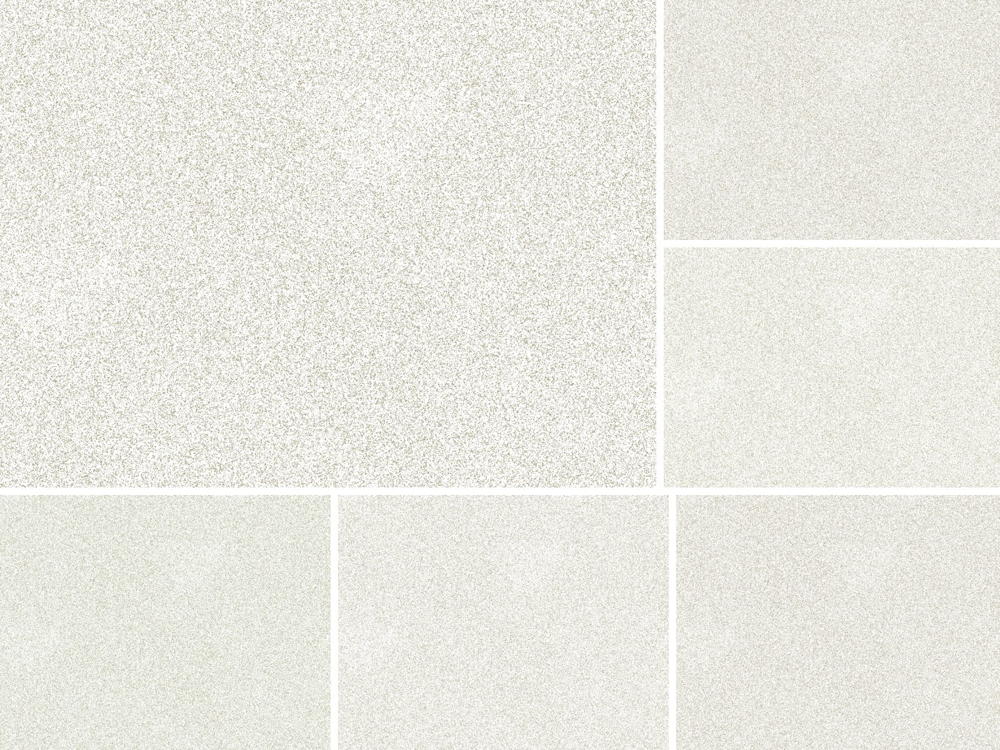

A print and texture read from terrain, for vehicle and outdoor textiles.

Brief
Starts from T6: place as the source, shown as the instrument it was read through. Color and grain are built from terrain, then tested at several grain levels. It continues the print work done for Rivian and would suit an adventure vehicle brand like them.